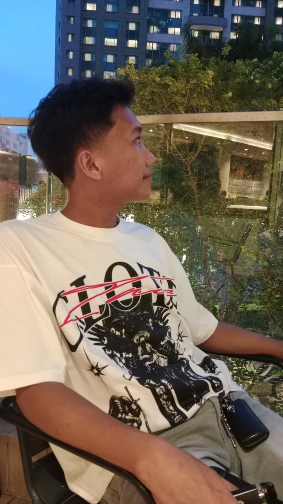
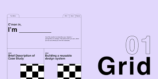

Blog List
Komponen: Nama Interface (h3), tanggal publikasi (post-meta), kutipan konten, dan tombol tautan ("Baca Selengkapnya"). Fungsi: Bagian konten dinamis untuk berbagi pemikiran atau pengetahuan secara berkala kepada pembaca.
Baca Selengkapnya
Kelas: DPW 2A | NIM: 250411100199
Halo Namaku Ach Deny Firdaus Latif, aku biasa di panggil Deny, Aku Tinggal Di kota Bangkalan Yang Berada Di Pulau Madura, Tahun Ini saya beranjak ke usia 21 di bulan Mei, harapan saya di kemudian hari yaitu,menjadi orng sukses.

Komponen: Foto profil (img), Nama (h1), dan Informasi Akademik (p). Fungsi: Sebagai identitas utama atau "sampul" halaman yang memberikan kesan pertama kepada pengunjung mengenai profil Anda.
.jpg)
Komponen: Judul bagian (h2) dan paragraf teks deskriptif. Fungsi: Menyajikan narasi personal mengenai latar belakang, asal daerah, dan harapan di masa depan.

Komponen: kartu Interface Custom yang berisi gambar (img), Nama Interface dan Fungsi (h3), dan deskripsi singkat. Fungsi: Menampilkan karya atau proyek yang pernah dikerjakan secara visual dan terstruktur untuk menunjukkan keahlian Anda.
Komponen: Nama Interface (h3), tanggal publikasi (post-meta), kutipan konten, dan tombol tautan ("Baca Selengkapnya"). Fungsi: Bagian konten dinamis untuk berbagi pemikiran atau pengetahuan secara berkala kepada pembaca.
Baca SelengkapnyaKomponen: Teks hak cipta (©) dan atribusi pembuat. Fungsi: Menutup halaman dengan informasi administratif dan menunjukkan kepemilikan situs tersebut
Baca Selengkapnya